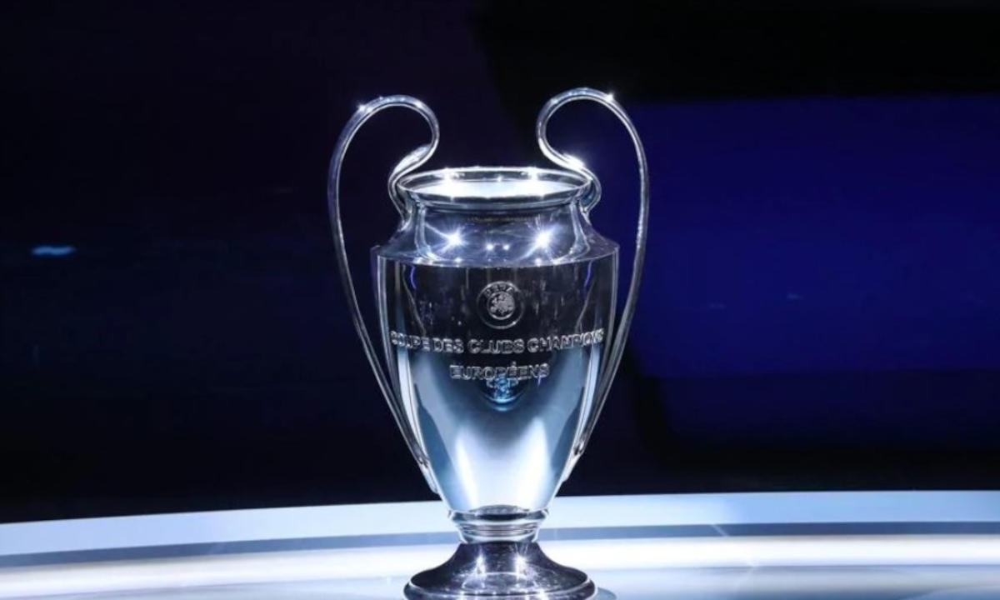

|  |
A Champions League é uma competição anual de futebol em nível
continental, organizada pela União das Associações Europeias
de
Futebol (UEFA) e disputada por clubes da Europa. É um dos torneios
mais prestigiados do mundo e a competição de clubes mais prestigiada
no futebol europeu,
disputada pelas equipes mais bem classificadas
nas ligas nacionais na temporada anterior.
A final da Liga dos
Campeões da UEFA é o evento esportivo anual mais visto em todo
o mundo. A final da edição de 2012-13 teve o maior número de
audiências
até o momento, atraindo 360 milhões de telespectadores.
|